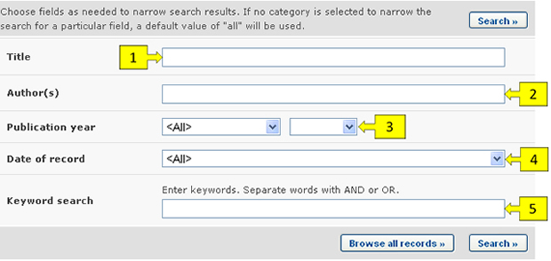
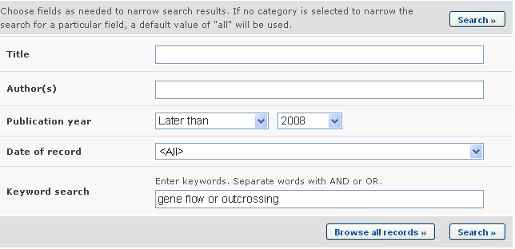
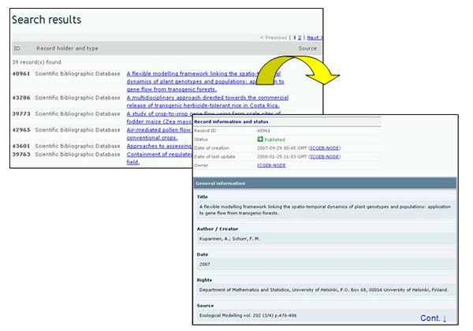

URL: http://bch.cbd.int/database/bibliographic-references/
El Artículo 20 del Protocolo de Cartagena establece el CIISB para facilitar el intercambio de información y experiencia con OVM entre las Partes, de tal forma que preste asistencia a las mismas en la implementación del Protocolo. Para ayudar a cumplir con esta misión el CIISB contiene información proporcionada por las Partes, gobiernos y organizaciones que es relevante para la bioseguridad y la implementación del Protocolo
Adicionalmente al Centro de Recursos de Información en Bioseguridad (CRIB), el CIISB proporciona acceso a una base de datos de artículos científicos (referencia completa y resumen), publicados en revistas periódicas desde 1990, relacionados con bioseguridad y evaluaciones de riesgo de la biotecnología. La Basede Datos de Bibliografía Científica es alojada y administrada por el Centro Internacional de Ingeniería Genética y Biotecnología (Sigla en inglés: ICGEB - International Centre for Genetic Engineering and Biotechnology) y se ha hecho interoperable con el CIISB.
La página del CIISB para buscar publicaciones en la Base de Datos de Bibliografía Científica puede ser accedida utilizando el vínculo Búsqueda de Información localizado en la barra de navegación o el menú ubicado en la barra izquierda de la página Búsqueda de Información.

En la página Búsqueda en la Base de Datos de Bibliografía Científica hay varios campos de criterios de búsqueda:
-
Título: Campo de palabra clave para buscar por título de publicación
-
Autor(es): Campo de palabra clave para buscar por autor.
-
Año de publicación: Lista de selección para acotar resultados según su año de publicación. La primer lista de selección especifica si se deben considerar los recursos publicados antes o después de la fecha especificada en el segundo cuadro. Si cualquiera de las dos listas de selección es dejada en blanco, entonces este campo no refinará los resultados.
-
Fecha del Registro: Campo de fecha para acotar la búsqueda a un cierto intervalo de tiempo.
-
Búsqueda por Palabra clave: Campo de palabra clave para refinar resultados según palabras claves
Vea “cómo usar las páginas de búsqueda” para aprender sobre los tipos de campo y cómo operarlos.

Ejemplo. Un usuario desea encontrar artículos científicos recientes sobre flujo de genes en cultivos. El usuario (i) selecciona después del 2008 en el cuadro año de publicación y (ii) ingresa flujo genético o entrecruzamiento en Palabra clave. Los resultados de la búsqueda se presentan en orden alfabético según los títulos de los artículos.


Esta imagen fue tomada en Febrero del 2010 con el único propósito de proveer un ejemplo sobre el uso del CIISB.
Suponiendo que el usuario encuentra un artículo útil de cierto autor, puede refinar la búsqueda agregando el apellido del autor al cuadro de búsqueda Autor(es). Con esto podrá identificar otros artículos recientes del mismo autor y sobre el mismo tema.